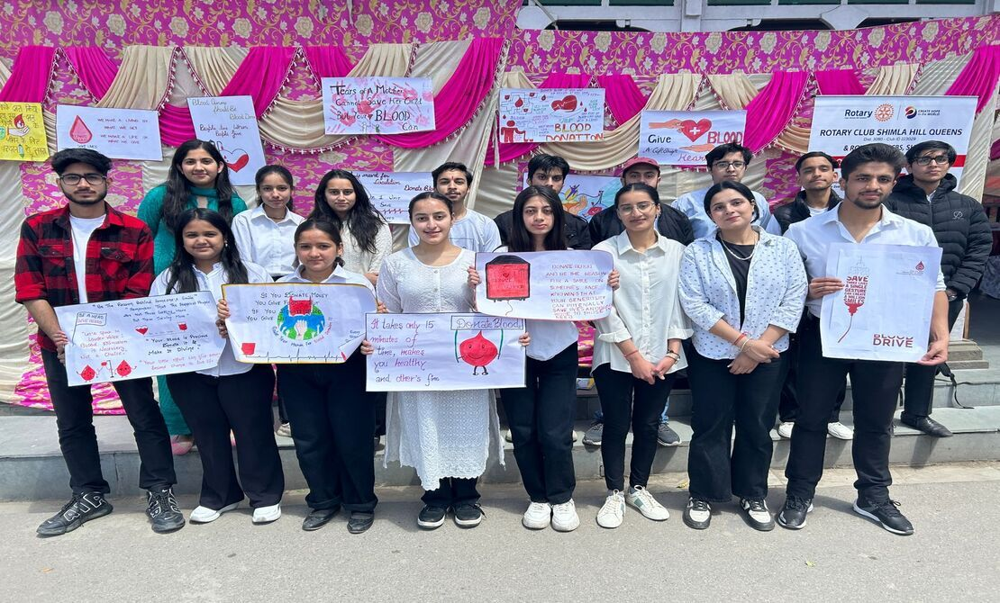
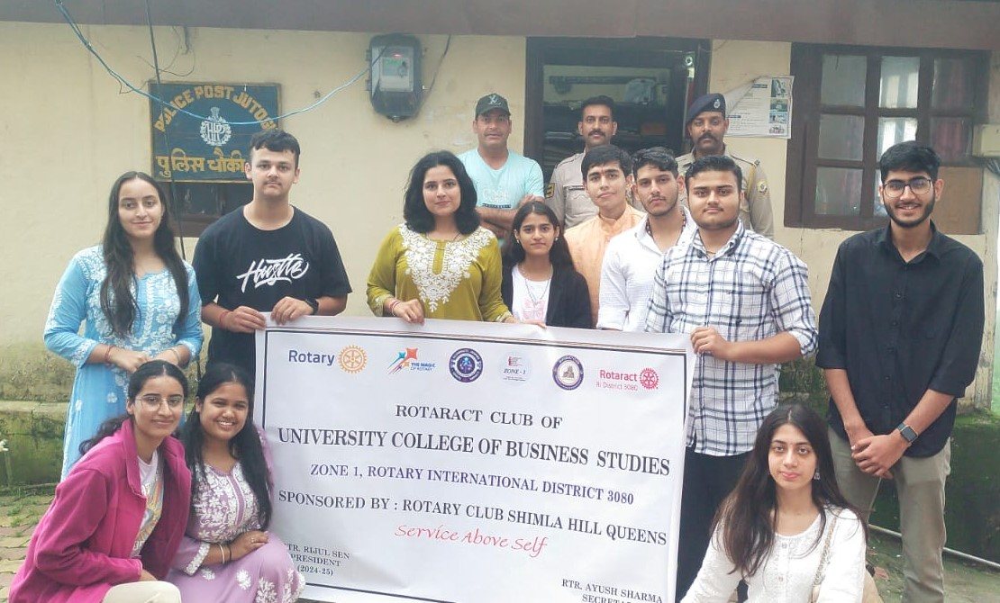

Rotaract is a global service club for young adults aged 18 to 30. It's sponsored by Rotary International, a well-known humanitarian organization. Rotaract Club of UCBS, the youth wing of Rotary Club of Shimla is an institutional-based organisation which encourages and fosters the ideal of service as a basis of worthy enterprise. There are 33 members are working in Rotaract Club of UCBS.
Read moreRotary is a global humanitarian organization founded in 1905, initially as the Rotary Club of Chicago by Paul P. Harris. Rotary is a global network of 1.4 million neighbours, friends, leaders, and problem-solvers who want a world where people unite and take action to create lasting change – across the globe, in our communities, and ourselves.
Read moreRotaract clubs bring together people aged 18 and older to exchange their ideas with leaders in the community, develop leadership and professional skills, and have fun through service. In communities worldwide, Rotary and Rotaract members work side by side to take action through their services. From big cities to rural villages, Rotaract is changing communities like yours.
Read more